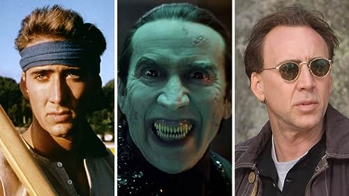

Early Life
Nicolas Kim Coppola (born January 7, 1964), known professionally as Nicolas Cage, is an American actor and film producer. He is...
Read More...Career Highlights
Cage's career began in the early 1980s and has spanned a wide range of genres...
Explore his Career...Acting Style & Reception
Known for his versatility and intense acting style, Cage has received both praise and criticism...
Learn More... 